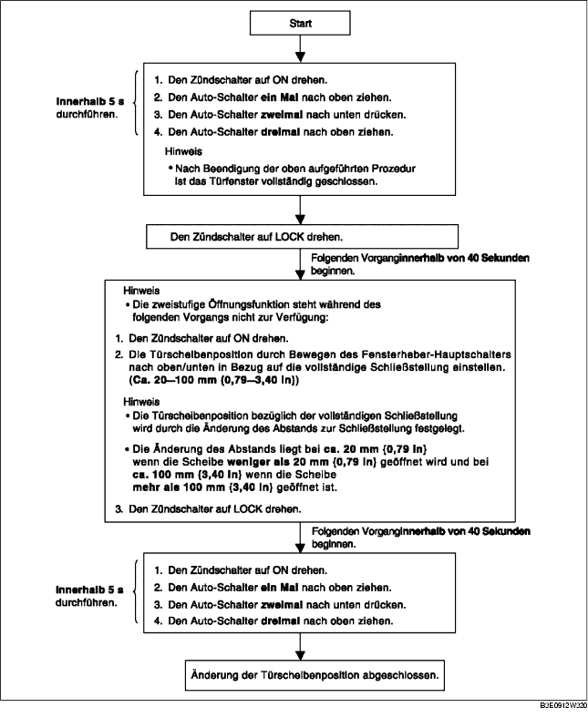

ÄNDERUNGSPROZEDUR FÜR FENSTERSCHEIBENPOSITION
B3E091266350W03
-
Hinweis
-
• Nach Durchführung der nachfolgenden Prozedur sicherstellen, dass die zweistufige Öffnungsfunktion vorschriftsmäßig arbeitet und sich die Türscheibenposition geändert hat. Falls die zweistufige Öffnungsfunktion nicht arbeitet oder sich die Türscheibenposition nicht geändert hat, wurde die Prozedur nicht ordnungsgemäß durchgeführt. Den Vorgang von Anfang an wiederholen.
